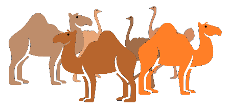

Romhányi József*
„Romhányi, a rímhányó” – nem hiába kapta ezt a jelzőt Romhányi József író, költő, akinek többek között a Mézga család, a Dr. Bubó, vagy a Frédi és Béni pazar szövegeit is köszönhetjük. Gyerekek ezrei nőttek fel állatversein, melyek közül most a teve fohászát elevenítjük fel.

A teve fohásza.
Monoton
üget a süppedô homokon
a sivatag lova,
a tétova teve
tova.
Hátán rezegve
mozog a
rozoga
kúp
alakú púp.
A helyzete nem szerencsés.
Apró szemcsés
homokkal telve
a füle, a nyelve.
Sóvár szemekkel kutat
kutat.
Még öt-hat nap
kullog baktat.
Az itató tava távol,
s oly rettentô messze még az oázis.
Erre utal az alábbi fohász is:
- Tevék ura!
Te tevél tevévé engem eleve,
Teveled nem ér fel tevefej tétova veleje.
Te terved veté a tevevedelô tavat tavaly távol,
de tévednél, vélvén,
vén híved neved feledve
elvetemedve
vádol.
Nem! Vidd te tevelelkem hovatovább tova,
mivel levet - vert vederbe
feltekerve - nem vedelve
lett betelve
a te tevéd szenvedelme.
Te nevedbe
legyen eme
neveletlen tevetetem
eltemetve!
S evezzevel ava teve
levelkévét kivilevelhevelteve.
*Született: 1921. március 8. (Nagytétény) - Elhunyt: 1983. május 7. (Budapest)
Fejtörő
Egy oázisban tevék és struccok mászkálnak. Összesen 24 fejük és 58 lábuk van. Hány teve és hány strucc van az oázisban?
Teve:
Strucc: